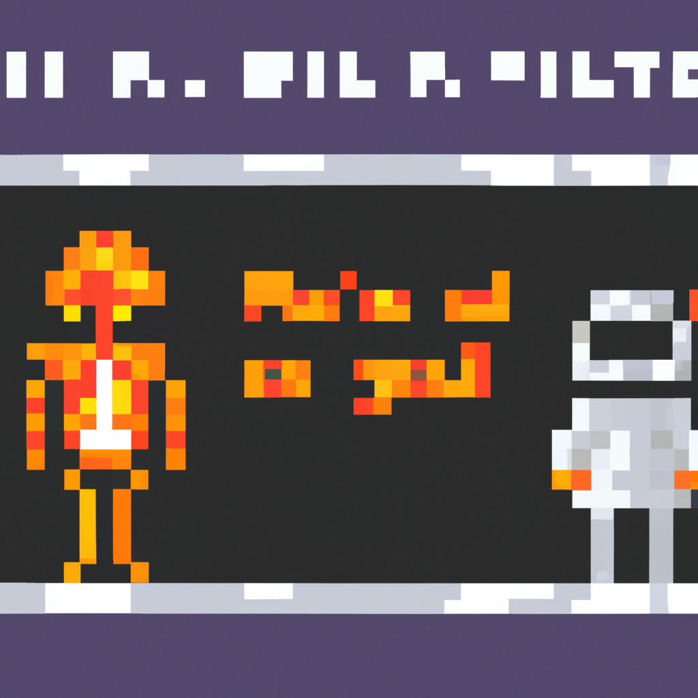

Why AI will never replace the radiologist
AI has the potential to revolutionize many aspects of the medical field, with radiology being no exception. Machine learning (ML) can be used to detect anomalies on images, such as tumors or fractures, and even diagnose diseases. While the idea of using AI to replace the radiologist may be tempting, I believe it’s too soon to consider it.
There are a few reasons why I think AI will never replace the radiologist. First, the accuracy of AI is still not yet up to the standard of a human radiologist. AI can detect anomalies, but it doesn’t understand the context or the implications of the findings. For example, a radiologist would interpret an anomaly differently depending on the patient’s medical history and other factors.
Second, AI is expensive to develop and maintain. The cost of developing and training an AI system can be prohibitive, and it’s difficult to ensure the accuracy of the results. A radiologist, on the other hand, can be trained quickly and at a much lower cost.
Finally, AI can’t replace the human interaction that a radiologist provides. Radiologists can provide support and advice to patients and their families, something that AI can’t do.
In conclusion, AI has the potential to revolutionize radiology, but I don’t think it will ever replace the radiologist. The accuracy is not yet up to standard, the cost is too high, and it can’t provide the same level of human interaction.